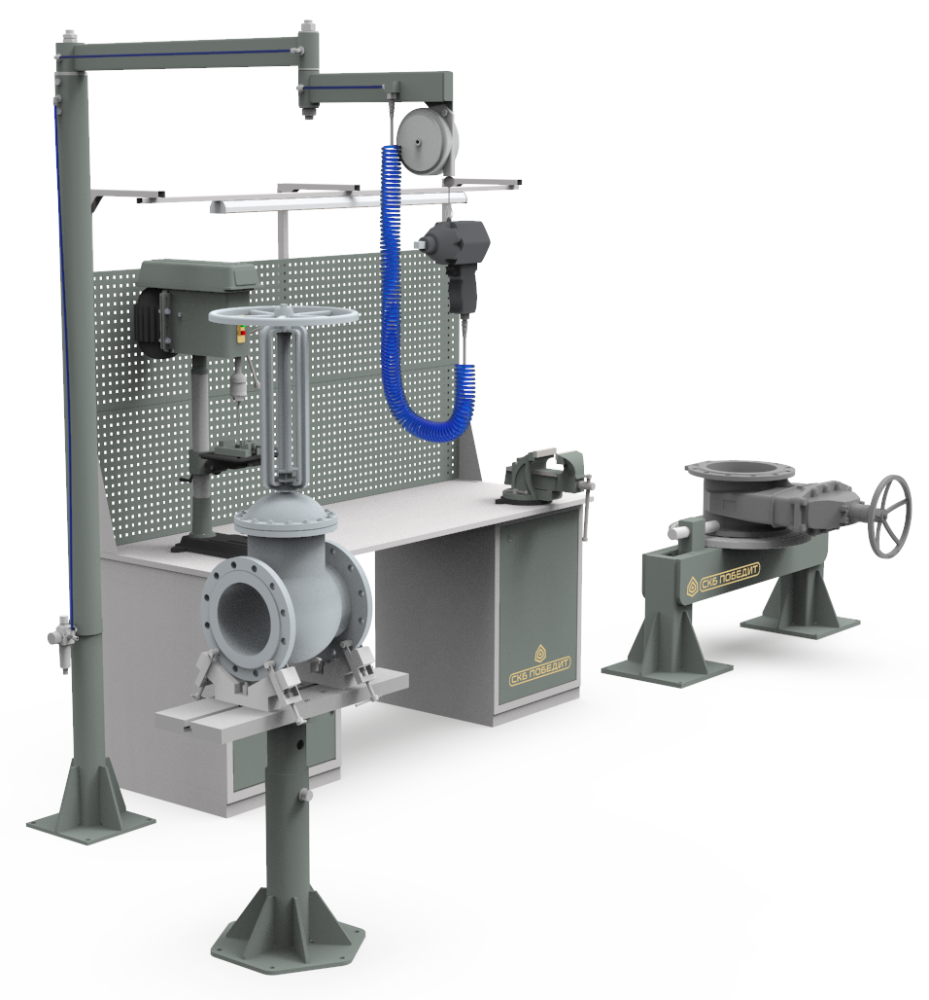

ПОБЕДИТ-РМ-1
Рабочее место предназначено для разборки, сборки и предварительных испытаний запорной и регулирующей арматуры с номинальным диаметром DN 15-300 мм.
Рабочее место предназначено для разборки, сборки и предварительных испытаний запорной и регулирующей арматуры с номинальным диаметром DN 15-300 мм.
| Параметры | ПОБЕДИТ-РМ-1 |
|---|---|
| Диапазон арматуры DN, мм | 15-300 |
| Максимальная строительная длинна арматуры, мм | 700 |
| Номинальное давление арматуры, МПа | 0…20 |
| Масса рабочего места со всеми комплектующими, кг | 1650 |
Верстак с перфорированным экраном, сверлильным станком, тисками, набором инструментов и средствами
первой помощи;
Стенд для разборки и сборки арматуры DN 15-300 мм;
Стойка с поворотной ломающейся стрелой, талью балансиром и гайковертами различной мощности;
Стенд для предварительных пневматических испытаний арматуры давлением 0,6 МПа.